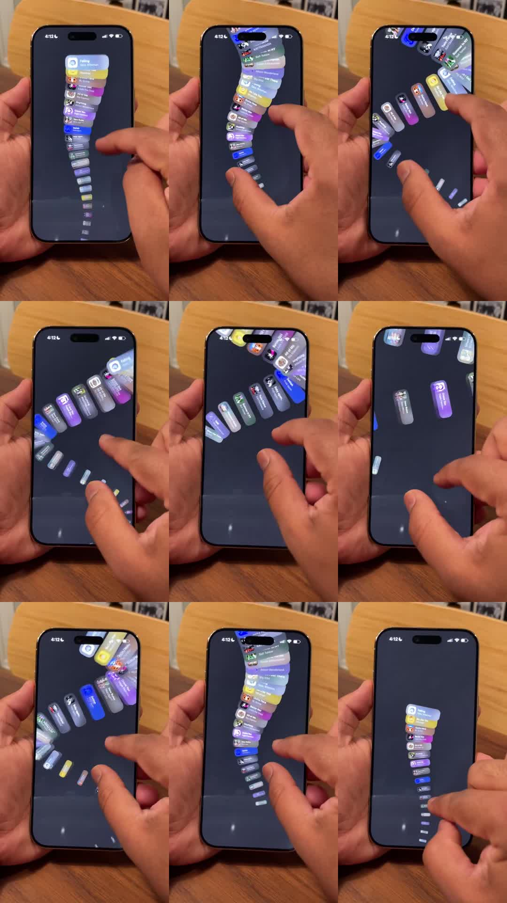

Wavy carousel (shot on a real iPhone): notifications laid out on a vertical helix - a spiral conveyor of notification cards that wind around an invisible cylinder; dragging rotates the helix so cards swing from bottom-center around the right edge to top, scaling and dimming with depth; flick momentum carries the spin.
Media
Frame-by-frame

0-25%
Finger drags up: the stack of notification cards (Lock Screen style, icon + title + body) rides an S-curve - cards near the finger are flat and large, cards further wind around the bend shrinking and tilting.
25-50%
Cards wrap over the top-right edge: they rotate in 3D (rotateY + perspective), foreshortening as they go around the cylinder's back, reappearing dimmed at the left.
50-75%
Fast flick: helix spins with momentum - cards blur slightly with velocity; spacing bunches then stretches like a spring along the curve.
75-100%
Spin decays and the stack settles into a neat vertical list at rest (cards aligned, full opacity).
Build prompt
Rebuild this interaction 1:1: a wavy carousel (shot on a real iPhone) - notifications laid out on a vertical helix: a spiral conveyor of notification cards winding around an invisible cylinder. Dragging rotates the helix so cards swing from bottom-center around the right edge to the top, scaling and dimming with depth; flick momentum carries the spin.
## Integration
Integration: stack-agnostic spec - springs given as stiffness/damping, timed motions as duration + curve, canvas/shader notes are perf guidance only; map every value to your framework and animation library of choice.
## Scene
Lock-Screen-style notification cards (icon + title + body) winding around an invisible vertical cylinder. Cards near the finger: flat, large, full opacity. Cards winding around the bend: shrinking, tilting (rotateY foreshortening), dimming.
## Motion spec
Pattern: gesture-driven 3D drum.
- Drag: helix rotation 1:1 with the finger; cards ride the S-curve - bottom-center cards swing around the right edge to the top.
- Depth: rotateY foreshortening around the cylinder's back; cards reappear dimmed at the left; scale and opacity fall off with angular distance.
- Flick: momentum spin with exponential decay (~1.2s); cards blur slightly with velocity; spacing bunches then stretches like a spring along the curve.
- Settle: spin decays into a neat vertical list at rest (cards aligned, full opacity) - spring on release-to-list.
## Calibration
- Rotation is frame-linked to the drag - any smoothing on the master angle kills the physicality.
- Velocity blur is subtle (1-2px) and only during fast spins.
- The settle-to-list spring is the payoff: the helix unwinds into order.
## Reduced motion
Cards scroll as a flat vertical list, 1:1 with drag; no rotation, no momentum.
## Don't miss
- The cylinder math: per-card transforms come from one helix angle function - hand-placed cards will never read as a drum.
- Cards pass behind (dimmed, foreshortened) - they must actually go around, not just scale down.
- Momentum decay ~1.2s exponential; linear decay feels like friction-less ice then a wall.